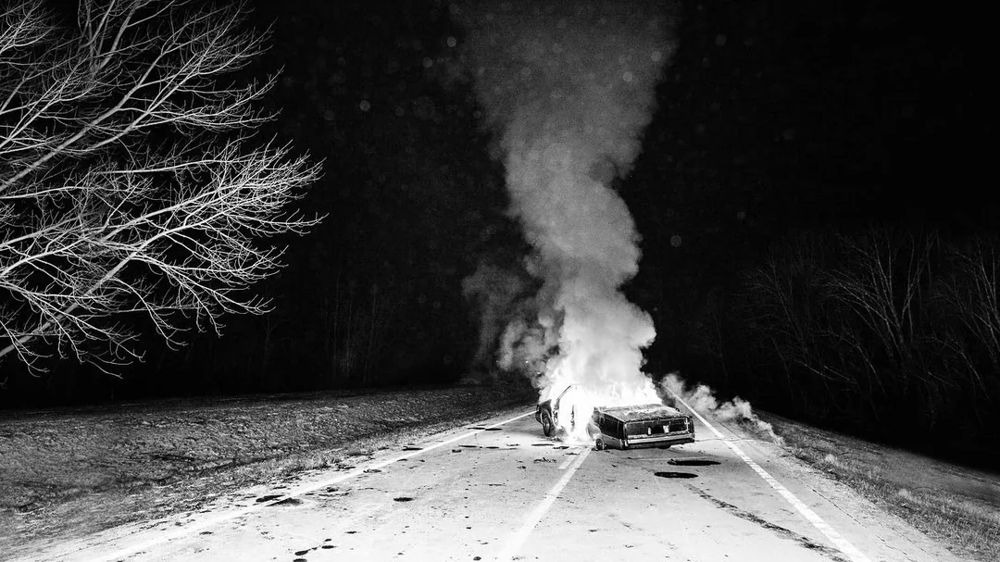
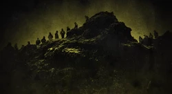

A história de Dema começou na era Blurryface, onde o duo apresentou um universo fictício com o tema principal sobre saúde mental.
A história segue por todos os álbuns a parrtir dessa era, introduzindo em 2015 com o Blurryface, se aprofundando em 2018 com Trench, seguindo um caminho diferente com
Scale and Icy em 2021 e, por fim, encerrando a história com Clancy e Breach em 2024 e 2025.
A armadilha
A primeira música a apresentar esse universo é "Heavydirtysoul", a abertura do álbum Blurryface, onde o protagonista, Tyler Joseph, monta um distração para fugir do
vilão e sair da ciade de Dema, Josh o ajuda com isso. O antagonista, também entitulado Blurryface, ou em tradução livre, "rosto borrado", representa a ansiedade e
a depressão do protagonista.
Mais pra frente nesse álbum podemos conhecer um pouco mais sobre esse personagem em músicas com Stressed Out e Fairly Local.

A cidade de Dema
Dema é uma cidade circular de cimento que é governada por 9 bispos, seu líder é Nicolas Bourbaki, também conhecido como Blurryface. Eles são chamados de bispos por
conta de suas vestes e ritos, além da sua religião, chamada Vialismo. Essa crença ensina a auto destruição, sacrifício, controle e isolamento.
Quando um cidadão da cidade morre, nessa religião é chamado como uma "Ida gloriosa", e seus corpos são armazenados em lápides neon em volta da cidade.
Os bispos fazem o processo de "seizeing", que permite usar os corpos dos cidadãos que se foram como receptáculos, controlando-os.
O continente exilado
O segundo álbum que conta essa história é Trench, que também é o nome do continente que cerca a cidade de Dema.
Quando Tyler consegue fugir de Dema e do Blurryface, ele vai para esse continente, onde encontra os Banditos, rebeldes exilados da cidade, que são proibidos de voltar.
Todos os banditos já foram cidadão de Dema alguma vez, mas agora estão banidos, obrigados a ficar fora da cidade.

Scale and Icy is Propaganda!
Tyler é capturado novamente por Nico e, em Scale and Icy é levado para um programa de TV em Dema, para entreter o povo. Com uma estética feliz mas letras profundas
e depressivas, o protagonista mostra seu repúdio a essa ditadura através de suas canções. Um dos 9 bispos se revolta contra Nico e ajuda Tyler a escapar, controlando o
dragão "Trash" através do "siezeing", mas logo após a fuga, ele é morto pelos bispos restantes. Ao fugir, Tyler encontra Ned, um ser místico que com seu chifre,
pode-se fazer o processo de siezeing, que o nosso protagonista realiza. Scale and Icy é PROPAGANDA!
Clancy is Dead
No 4º e 5º álbum dessa história nos é apresentado que o nome do protagonista é Clancy. Seu amigo Josh e os banditos, vem procurando por ele a muito tempo, como profetizado que
o "Clancy" iria destruir Nico e seus bispos. Ao que se preparam para o confronto final e juntam forças com todos os banditos e cidadão que querem escapar de Dema, eles
invadem a cidade e atacam Nico e seus bispos. Clancy, ao matar Nico, pega seu lugar, virando o mais novo bispo e governante de Dema, provando que o ciclo nunca termina.
Torchbearer, Josh, se decepciona ao ver isso, mas não é a primeira vez que isso acontece, e eles vão tentar de novo, sempre...